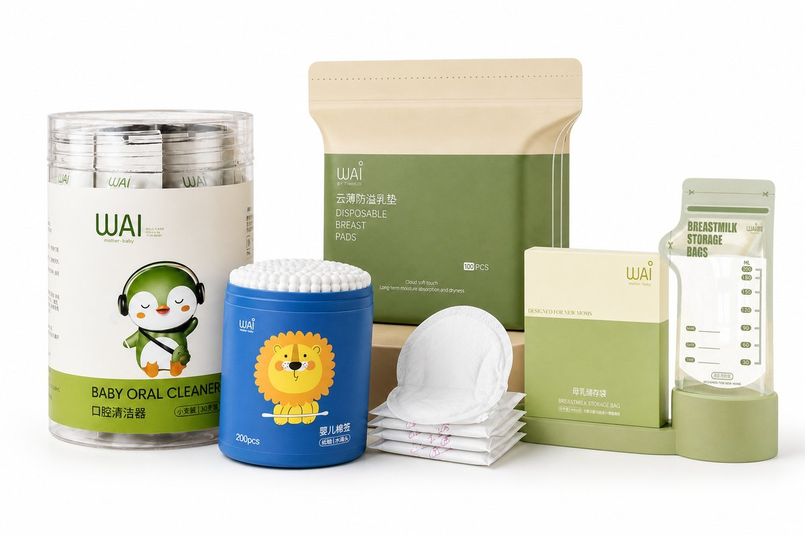

Wai: chăm sóc nhỏ, yêu thương lớn
Wai bắt đầu từ những điều rất nhỏ trong ngày của mẹ và bé: một que rơ lưỡi sạch sẽ buổi sáng, một chiếc tăm bông mềm sau giờ tắm, một miếng lót giữ áo mẹ khô thoáng, một túi sữa được trữ cẩn thận cho cữ bú sau.
Câu chuyện thương hiệu
Chúng tôi hiểu rằng với mẹ, đồ dùng cho bé không chỉ cần tiện mà phải sạch, an toàn và đáng tin. Vì vậy Wai tập trung vào nhóm sản phẩm vệ sinh và chăm sóc hằng ngày, chọn lọc chất liệu, chú trọng đóng gói riêng từng sản phẩm và thiết kế bao bì vui tươi để mẹ dùng vui, bé cũng thích.
Wai đã đồng hành cùng hàng nghìn gia đình Việt, với hơn 12.000 sản phẩm đã được các mẹ lựa chọn. Hôm nay, Wai mong muốn đưa sản phẩm đến gần hơn với các mẹ qua mạng lưới cửa hàng mẹ & bé và đại lý trên khắp cả nước.

Giá trị Wai theo đuổi
Chất liệu chọn lọc
Bông tự nhiên, thân giấy, nhựa không BPA cho các sản phẩm tiếp xúc với bé và sữa mẹ.
Đóng gói vệ sinh
Từng que, từng miếng được đóng gói riêng, hạn chế bụi bẩn trước khi dùng.
Thiết kế vì mẹ
Nhỏ gọn, dễ dùng, dễ mang theo: xuất phát từ nhu cầu thực tế của các gia đình.
Cùng đại lý phát triển
Chính sách rõ ràng, hóa đơn đầy đủ, hỗ trợ bán hàng lâu dài.